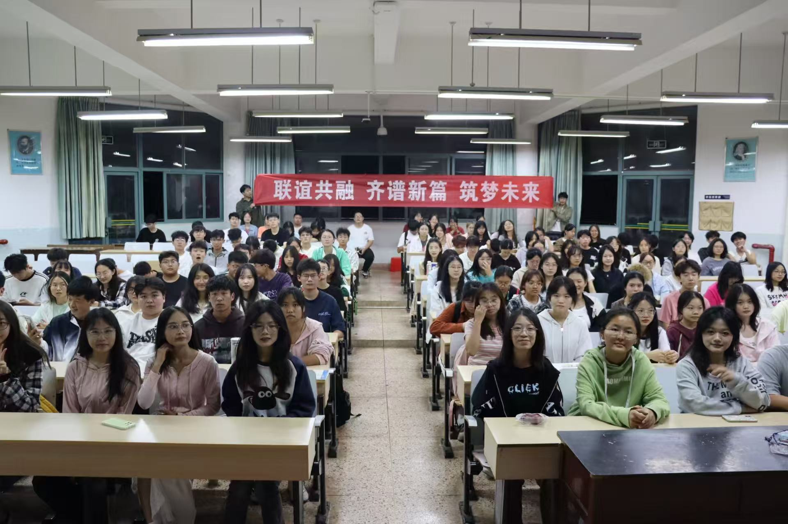
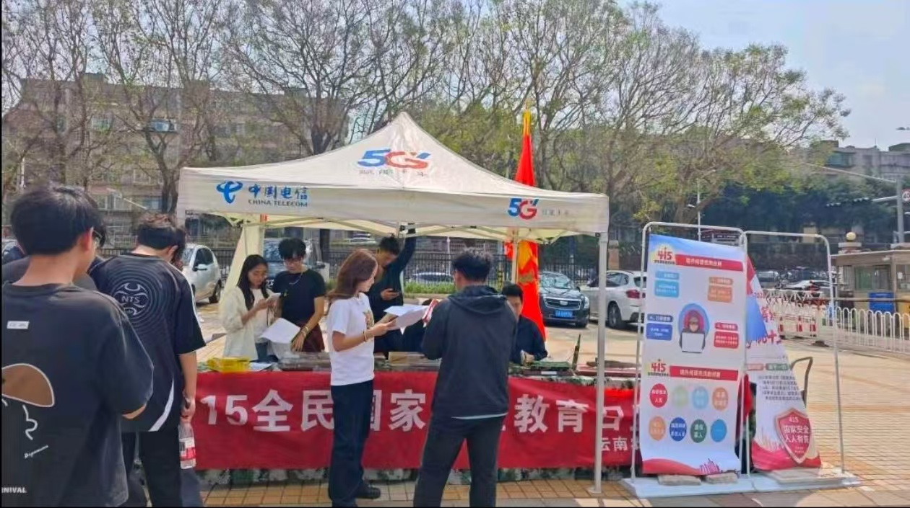
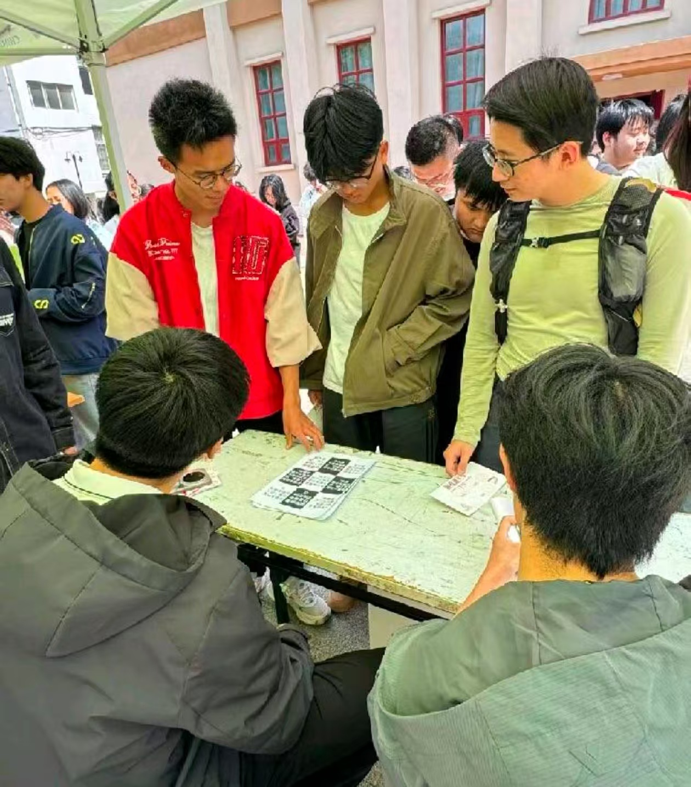
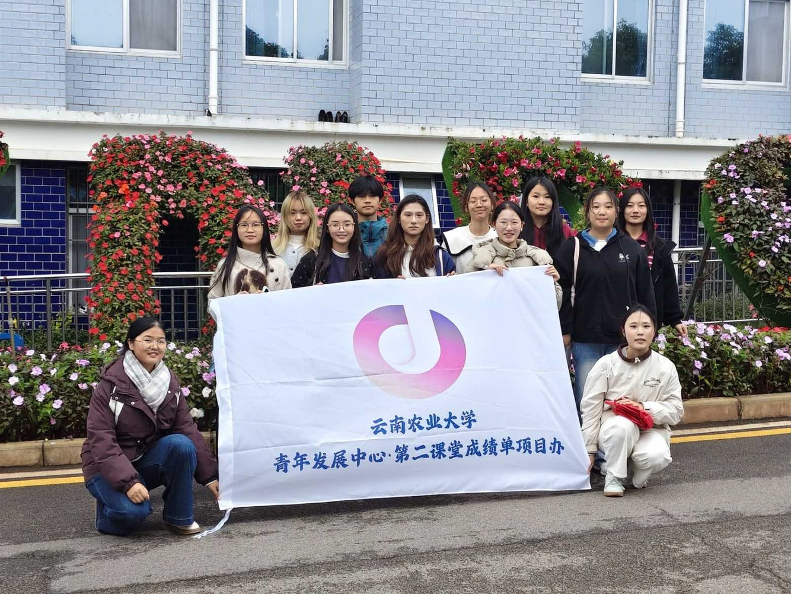
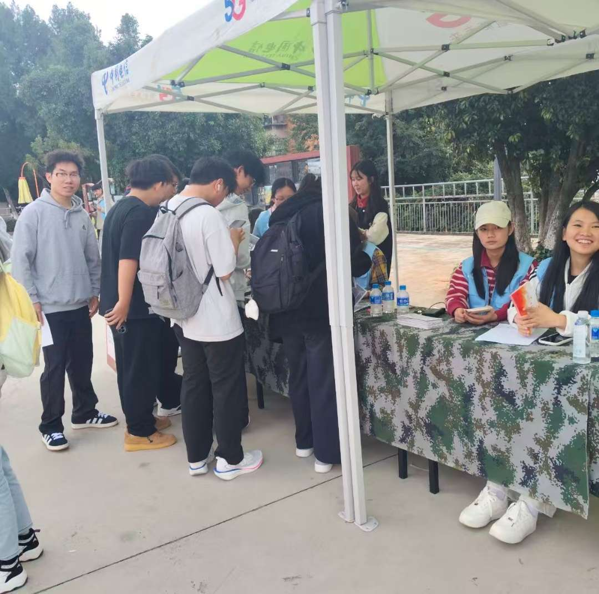
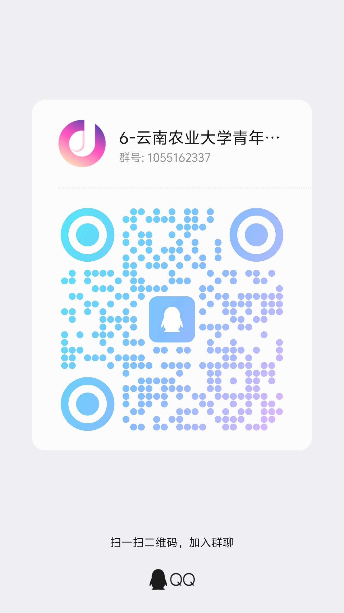

审核部
负责日常二课活动的审核工作，把关活动质量与规范性，确保第二课堂活动有序开展。
审核
我们是谁
本社团受云南农业大学校团委指导，以"公平公正、透明公开"为原则，以服务学校"第二课堂成绩单"制度落地、助力学生综合素质拓展为宗旨，长期开展"到梦空间"平台运营、二课活动审核、学分认定管理、咨询申诉处理及寒暑期社会实践组织等工作。
近年来，社团围绕"双课堂协同育人"理念不断推进品牌建设，打造了"禁毒防艾，你我同行""校园文明随手拍"等特色活动，形成了具有云农特色的实践育人体系，学校也于2025年成为云南省唯一一所三项指标同时入围全国高校"第二课堂"建设50强的高校。
未来，社团将继续深耕"第二课堂成绩单"制度化、规范化建设，推动第一课堂与第二课堂互动互融，陪伴同学们在实践中成长成才。
组织架构
负责日常二课活动的审核工作，把关活动质量与规范性，确保第二课堂活动有序开展。
审核负责二课学分的补录、统计和预警，精准管理学生学分数据，为第二课堂成绩单提供数据支撑。
数据负责编写、制作宣传材料，全方位宣传社团活动与第二课堂政策，扩大活动影响力。
传播负责协调各部门的工作，并作为其他部门的补充，保障社团日常事务高效运转。
统筹活动剪影
从国家安全教育到禁毒防艾宣讲，
从全体大会到团建活动，每一帧都是成长的注脚。
品牌项目

01以4·15全民国家安全教育日为契机，大力弘扬总体国家安全观，引导同学们增强国家安全意识、厚植家国情怀，筑牢校园安全思想防线，营造人人有责、人人尽责的安全校园氛围。本次活动期间，第二课堂项目办与国旗护卫队共同组织工作人员为参与活动的同学提供线下引导、签到及秩序维护等服务。
国家安全 · 思想引领查看活动详情 ↗
02为了营造健康、积极的校园氛围，本次活动邀请了云南警官学院的同学来进行宣讲，普及禁毒防艾知识，同时设置集章活动，增强学生自我保护意识。在本次活动期间，工作人员们齐心协力，助力活动的顺利展开。
禁毒防艾 · 校园健康查看活动详情 ↗
03为深入贯彻落实国家及云南省关于禁毒工作的部署要求，切实增强青年学生识毒、防毒、拒毒意识，充分发挥云南警官学院禁毒教育资源优势，组织我校学生代表赴云南警官学院开展专题实践活动，同时深化两校学生交流互动，进一步强化思想自觉与行动自觉。
校际交流 · 实践育人查看活动详情 ↗
04铭记历史，缅怀先烈。本次活动以纪念抗战胜利80周年为契机，引导青年学子铭记历史、珍爱和平，传承抗战精神，厚植爱国主义情怀，在实践中感悟历史、汲取奋进力量。
红色教育 · 历史传承查看活动详情 ↗成果荣誉
2025年，学校成为云南省唯一一所三项指标同时入围全国高校"第二课堂"建设50强的高校，标志着第二课堂建设工作走在全国前列。
荣获全国2025年度"到梦空间"系统入驻高校优秀第二课堂管理团队称号，是对项目办平台运营与服务能力的国家级认可。
